Changes in PRIMAP-hist v2.5.1_final compared to v2.5_final for Togo
2024-02-29
Johannes Gütschow
Change analysis for Togo for PRIMAP-hist v2.5.1_final compared to v2.5_final
Overview over emissions by sector and gas
The following figures show the aggregate national total emissions excluding LULUCF AR6GWP100 for the country reported priority scenario. The dotted linesshow the v2.5_final data.
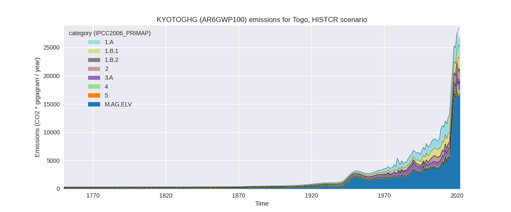
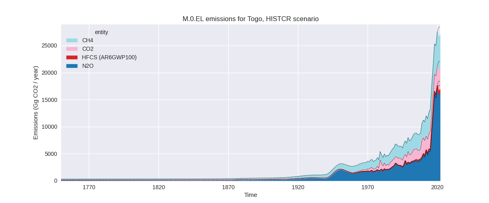
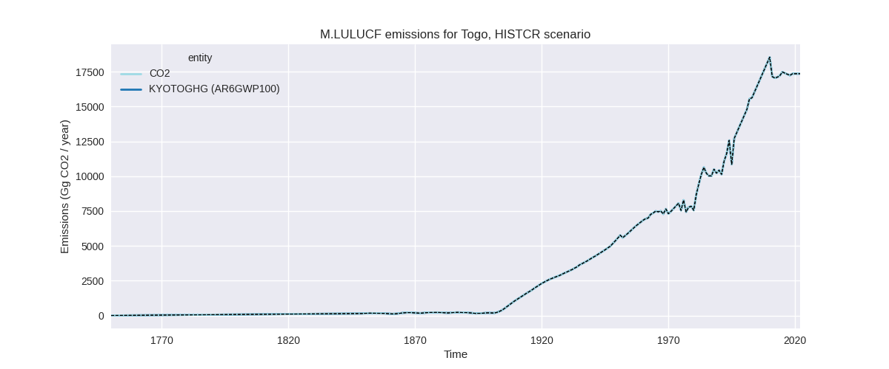
The following figures show the aggregate national total emissions excluding LULUCF AR6GWP100 for the third party priority scenario. The dotted linesshow the v2.5_final data.
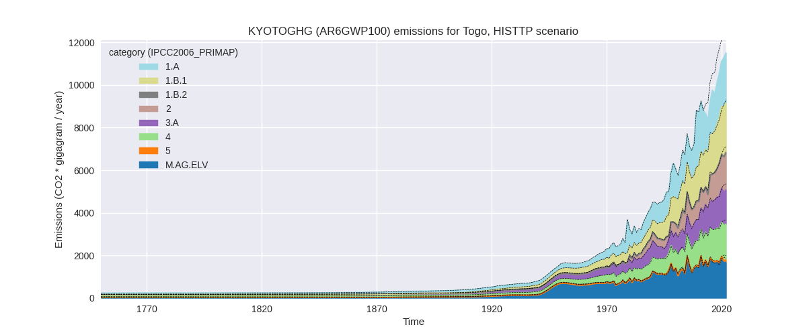
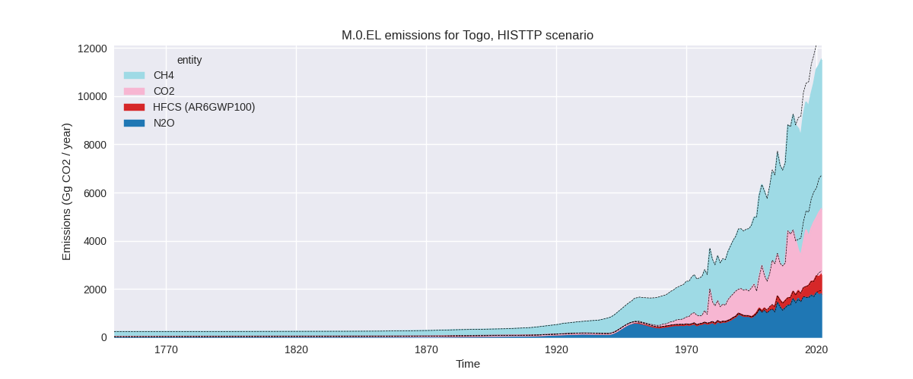
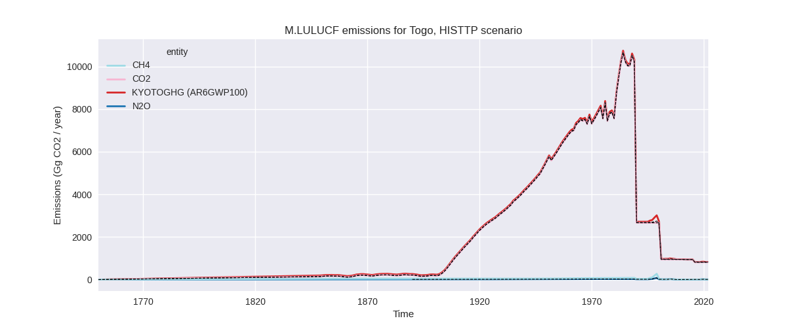
Overview over changes
In the country reported priority scenario we have the following changes for aggregate Kyoto GHG and national total emissions excluding LULUCF (M.0.EL):
- Emissions in 2022 have changed by -5.0%% (-1417.43 Gg CO2 / year)
- Emissions in 1990-2022 have changed by -0.8%% (-93.00 Gg CO2 / year)
In the third party priority scenario we have the following changes for aggregate Kyoto GHG and national total emissions excluding LULUCF (M.0.EL):
- Emissions in 2022 have changed by -10.8%% (-1392.61 Gg CO2 / year)
- Emissions in 1990-2022 have changed by -4.4%% (-344.80 Gg CO2 / year)
Most important changes per scenario and time frame
In the country reported priority scenario the following sector-gas combinations have the highest absolute impact on national total KyotoGHG (AR6GWP100) emissions in 2022 (top 5):
- 1: M.AG.ELV, N2O with -1435.58 Gg CO2 / year (-8.5%)
- 2: M.AG.ELV, CH4 with -228.95 Gg CO2 / year (-13.8%)
- 3: 1.A, CO2 with 207.04 Gg CO2 / year (9.1%)
- 4: 1.B.1, CH4 with 117.56 Gg CO2 / year (5.5%)
- 5: 3.A, CH4 with -75.44 Gg CO2 / year (-4.9%)
In the country reported priority scenario the following sector-gas combinations have the highest absolute impact on national total KyotoGHG (AR6GWP100) emissions in 1990-2022 (top 5):
- 1: M.AG.ELV, N2O with -119.93 Gg CO2 / year (-2.1%)
- 2: 1.A, CO2 with 36.37 Gg CO2 / year (2.3%)
- 3: M.AG.ELV, CH4 with -17.31 Gg CO2 / year (-2.9%)
- 4: 1.B.1, CH4 with 17.10 Gg CO2 / year (1.2%)
- 5: 2, CO2 with -13.10 Gg CO2 / year (-1.9%)
In the third party priority scenario the following sector-gas combinations have the highest absolute impact on national total KyotoGHG (AR6GWP100) emissions in 2022 (top 5):
- 1: 1.A, CO2 with -1260.64 Gg CO2 / year (-41.7%)
- 2: M.AG.ELV, N2O with -148.25 Gg CO2 / year (-10.0%)
- 3: 1.B.1, CH4 with 117.56 Gg CO2 / year (5.5%)
- 4: 3.A, CH4 with -77.70 Gg CO2 / year (-5.1%)
- 5: M.AG.ELV, CH4 with -58.43 Gg CO2 / year (-15.0%)
In the third party priority scenario the following sector-gas combinations have the highest absolute impact on national total KyotoGHG (AR6GWP100) emissions in 1990-2022 (top 5):
- 1: 1.A, CO2 with -303.41 Gg CO2 / year (-20.9%)
- 2: M.AG.ELV, N2O with -28.81 Gg CO2 / year (-2.8%)
- 3: M.AG.ELV, CH4 with -20.51 Gg CO2 / year (-4.9%)
- 4: 1.B.1, CH4 with 17.10 Gg CO2 / year (1.2%)
- 5: 2, CO2 with -13.10 Gg CO2 / year (-2.2%)
Notes on data changes
Here we list notes explaining important emissions changes for the country. ’' means that the following text only applies to the TP time series, while means that it only applies to the CR scenario. Otherwise the note applies to both scenarios.
- 1.A, CO2: Updated CDIAC emissions are much lower starting in 2013 leading to much lower post-2013 emissions in PRIMAP-hist. The growth rates of the updated CDIAC data lead to some changes in emissions after harmonization to country reported data.
- M.AG.ELV, N2O: A decline in emissions in 2021 in the new FAO data leads to lower 2022 data in PRIMAP-hist.
- M.AG.ELV, CH4: A decline in emissions in 2021 in the new FAO data leads to lower 2022 data in PRIMAP-hist.
- 1.B.1, CH4: Higher emissions in EDGAR 8.0 for the latest years lead to higher emissions in PRIMAP-hist.
Changes by sector and gas
For each scenario and time frame the changes are displayed for all individual sectors and all individual gases. In the sector plot we use aggregate Kyoto GHGs in AR6GWP100. In the gas plot we usenational total emissions without LULUCF. ## country reported scenario
2022
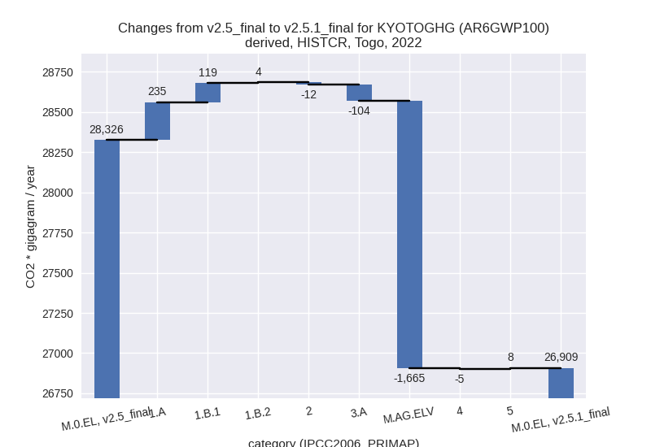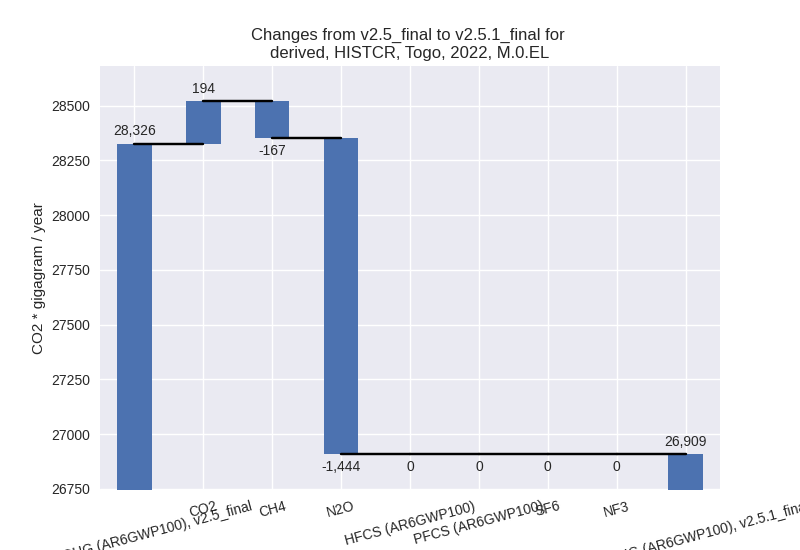
1990-2022
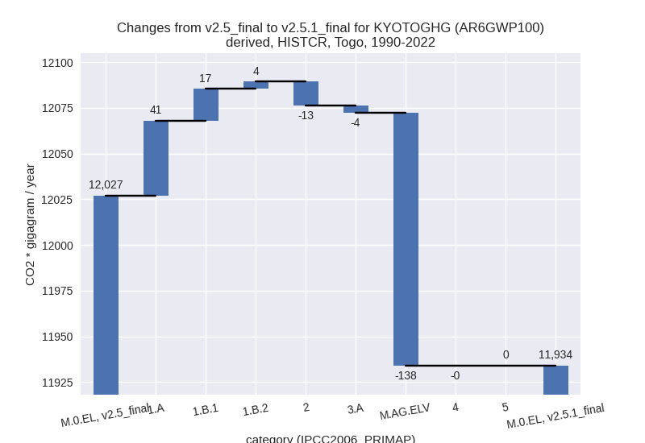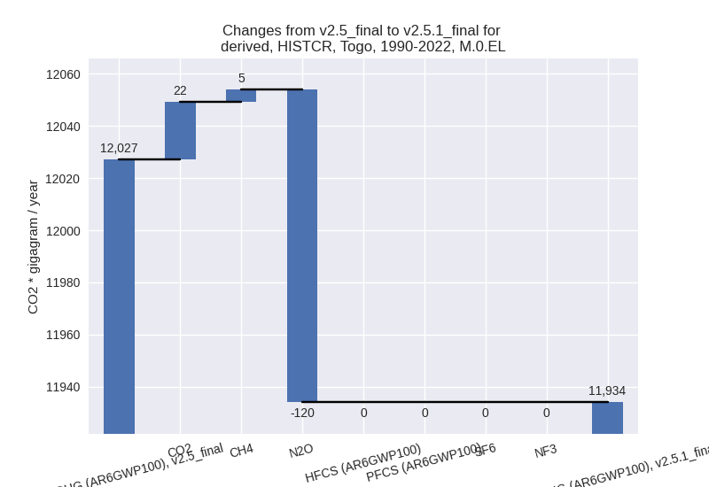
third party scenario
2022
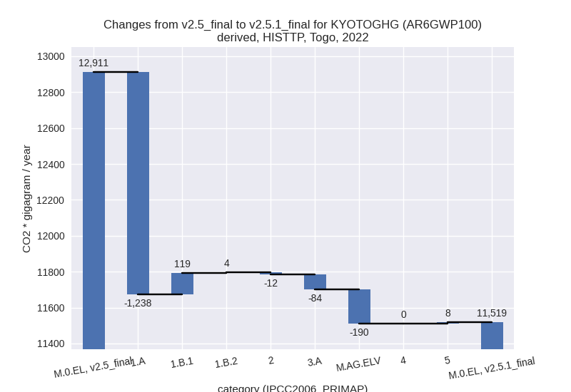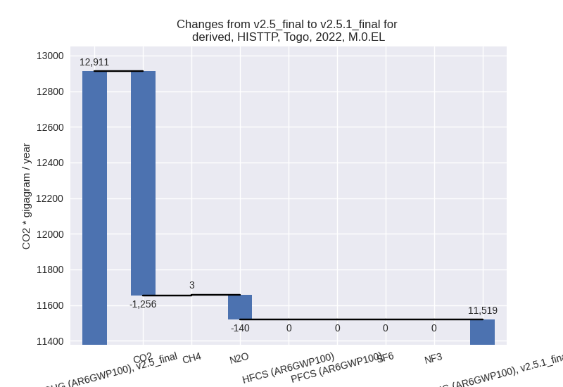
1990-2022
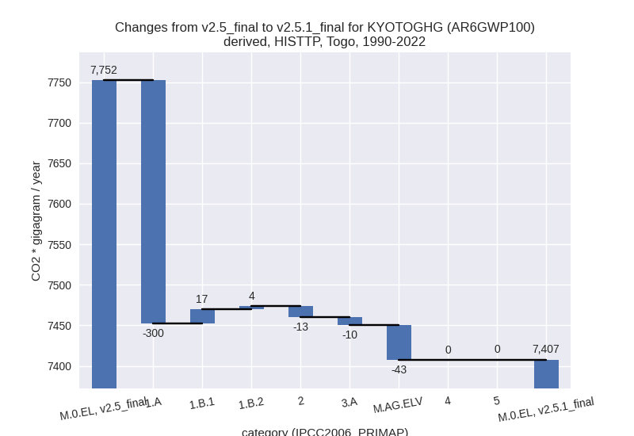
Detailed changes for the scenarios:
country reported scenario (HISTCR):
Most important changes per time frame
For 2022 the following sector-gas combinations have the highest absolute impact on national total KyotoGHG (AR6GWP100) emissions in 2022 (top 5):
- 1: M.AG.ELV, N2O with -1435.58 Gg CO2 / year (-8.5%)
- 2: M.AG.ELV, CH4 with -228.95 Gg CO2 / year (-13.8%)
- 3: 1.A, CO2 with 207.04 Gg CO2 / year (9.1%)
- 4: 1.B.1, CH4 with 117.56 Gg CO2 / year (5.5%)
- 5: 3.A, CH4 with -75.44 Gg CO2 / year (-4.9%)
For 1990-2022 the following sector-gas combinations have the highest absolute impact on national total KyotoGHG (AR6GWP100) emissions in 1990-2022 (top 5):
- 1: M.AG.ELV, N2O with -119.93 Gg CO2 / year (-2.1%)
- 2: 1.A, CO2 with 36.37 Gg CO2 / year (2.3%)
- 3: M.AG.ELV, CH4 with -17.31 Gg CO2 / year (-2.9%)
- 4: 1.B.1, CH4 with 17.10 Gg CO2 / year (1.2%)
- 5: 2, CO2 with -13.10 Gg CO2 / year (-1.9%)
Changes in the main sectors for aggregate KyotoGHG (AR6GWP100) are
- 1: Total sectoral emissions in 2022 are 5624.39 Gg
CO2 / year which is 20.9% of M.0.EL emissions. 2022 Emissions have
changed by 6.8% (358.92 Gg CO2 /
year). 1990-2022 Emissions have changed by 1.8% (62.25 Gg CO2 / year). For 2022 the
changes per gas
are:
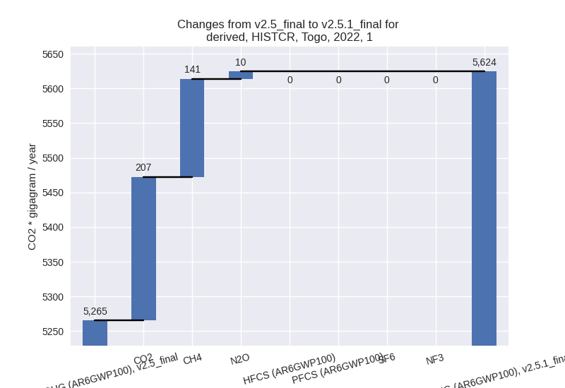
The changes come from the following subsectors:- 1.A: Total sectoral emissions in 2022 are 3316.38
Gg CO2 / year which is 59.0% of category 1 emissions. 2022 Emissions
have changed by 7.6% (235.41 Gg CO2
/ year). 1990-2022 Emissions have changed by 2.0% (40.90 Gg CO2 / year). For 2022 the
changes per gas
are:
For 1990-2022 the changes per gas are:
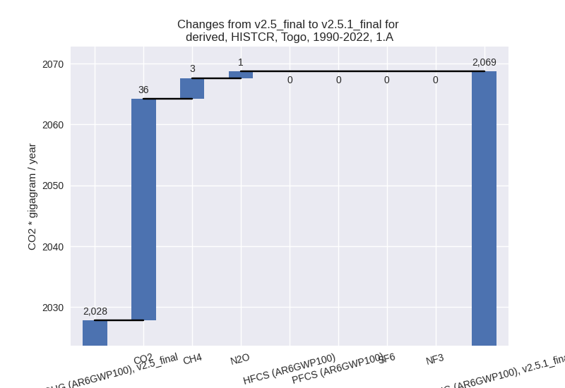
There is no subsector information available in PRIMAP-hist. - 1.B.1: Total sectoral emissions in 2022 are 2303.61
Gg CO2 / year which is 41.0% of category 1 emissions. 2022 Emissions
have changed by 5.5% (119.12 Gg CO2
/ year). 1990-2022 Emissions have changed by 1.2% (17.33 Gg CO2 / year). For 2022 the
changes per gas
are:
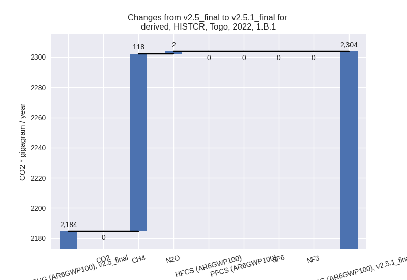
There is no subsector information available in PRIMAP-hist. - 1.B.2: Total sectoral emissions in 2022 are 4.40 Gg
CO2 / year which is 0.1% of category 1 emissions. 2022 Emissions have
changed by inf% (4.40 Gg CO2 /
year). 1990-2022 Emissions have changed by inf% (4.03 Gg CO2 / year). For 2022 the
changes per gas
are:
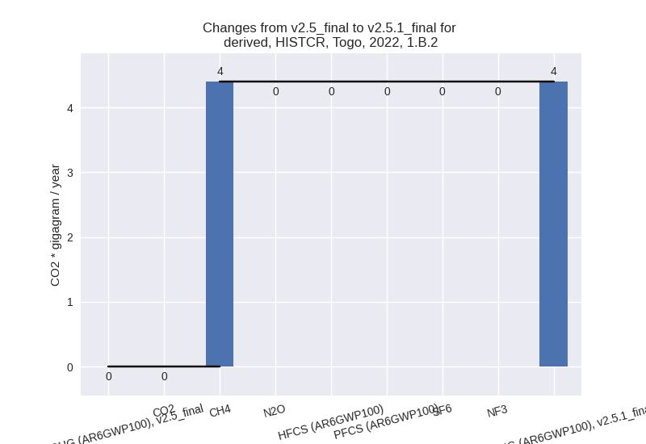
For 1990-2022 the changes per gas are:
There is no subsector information available in PRIMAP-hist.
- 1.A: Total sectoral emissions in 2022 are 3316.38
Gg CO2 / year which is 59.0% of category 1 emissions. 2022 Emissions
have changed by 7.6% (235.41 Gg CO2
/ year). 1990-2022 Emissions have changed by 2.0% (40.90 Gg CO2 / year). For 2022 the
changes per gas
are:
- 2: Total sectoral emissions in 2022 are 2181.13 Gg CO2 / year which is 8.1% of M.0.EL emissions. 2022 Emissions have changed by -0.5% (-11.69 Gg CO2 / year). 1990-2022 Emissions have changed by -1.4% (-13.10 Gg CO2 / year).
- M.AG: Total sectoral emissions in 2022 are 18551.19
Gg CO2 / year which is 68.9% of M.0.EL emissions. 2022 Emissions have
changed by -8.7% (-1768.33 Gg CO2 /
year). 1990-2022 Emissions have changed by -1.9% (-142.26 Gg CO2 / year). For 2022
the changes per gas
are:
The changes come from the following subsectors:- 3.A: Total sectoral emissions in 2022 are 1635.93
Gg CO2 / year which is 8.8% of category M.AG emissions. 2022 Emissions
have changed by -6.0% (-103.71 Gg
CO2 / year). 1990-2022 Emissions have changed by -0.4% (-3.91 Gg CO2 / year). For 2022 the
changes per gas
are:
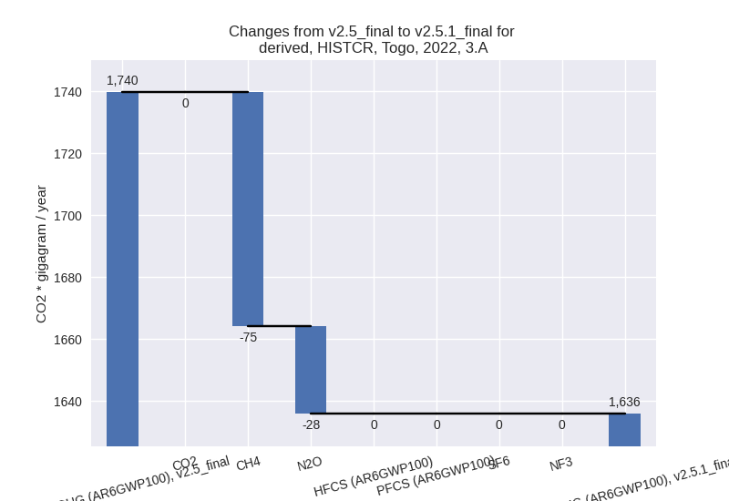
There is no subsector information available in PRIMAP-hist. - M.AG.ELV: Total sectoral emissions in 2022 are
16915.26 Gg CO2 / year which is 91.2% of category M.AG emissions. 2022
Emissions have changed by -9.0%
(-1664.63 Gg CO2 / year). 1990-2022 Emissions have changed by -2.2% (-138.35 Gg CO2 / year). For 2022
the changes per gas
are:
For 1990-2022 the changes per gas are:
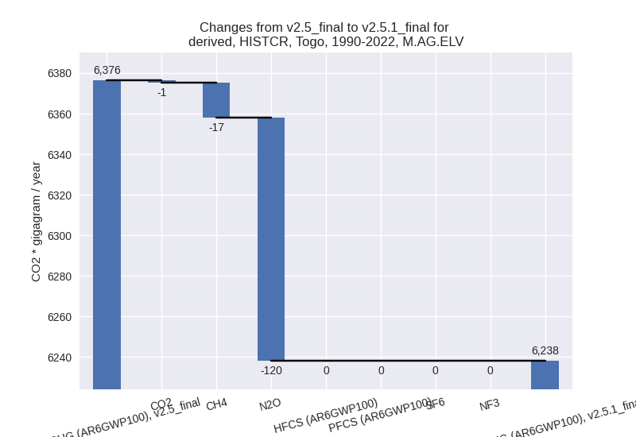
There is no subsector information available in PRIMAP-hist.
- 3.A: Total sectoral emissions in 2022 are 1635.93
Gg CO2 / year which is 8.8% of category M.AG emissions. 2022 Emissions
have changed by -6.0% (-103.71 Gg
CO2 / year). 1990-2022 Emissions have changed by -0.4% (-3.91 Gg CO2 / year). For 2022 the
changes per gas
are:
- 4: Total sectoral emissions in 2022 are 432.40 Gg CO2 / year which is 1.6% of M.0.EL emissions. 2022 Emissions have changed by -1.1% (-4.66 Gg CO2 / year). 1990-2022 Emissions have changed by -0.1% (-0.14 Gg CO2 / year).
- 5: Total sectoral emissions in 2022 are 119.51 Gg
CO2 / year which is 0.4% of M.0.EL emissions. 2022 Emissions have
changed by 7.5% (8.33 Gg CO2 /
year). 1990-2022 Emissions have changed by 0.4% (0.25 Gg CO2 / year). For 2022 the
changes per gas
are:
third party scenario (HISTTP):
Most important changes per time frame
For 2022 the following sector-gas combinations have the highest absolute impact on national total KyotoGHG (AR6GWP100) emissions in 2022 (top 5):
- 1: 1.A, CO2 with -1260.64 Gg CO2 / year (-41.7%)
- 2: M.AG.ELV, N2O with -148.25 Gg CO2 / year (-10.0%)
- 3: 1.B.1, CH4 with 117.56 Gg CO2 / year (5.5%)
- 4: 3.A, CH4 with -77.70 Gg CO2 / year (-5.1%)
- 5: M.AG.ELV, CH4 with -58.43 Gg CO2 / year (-15.0%)
For 1990-2022 the following sector-gas combinations have the highest absolute impact on national total KyotoGHG (AR6GWP100) emissions in 1990-2022 (top 5):
- 1: 1.A, CO2 with -303.41 Gg CO2 / year (-20.9%)
- 2: M.AG.ELV, N2O with -28.81 Gg CO2 / year (-2.8%)
- 3: M.AG.ELV, CH4 with -20.51 Gg CO2 / year (-4.9%)
- 4: 1.B.1, CH4 with 17.10 Gg CO2 / year (1.2%)
- 5: 2, CO2 with -13.10 Gg CO2 / year (-2.2%)
Changes in the main sectors for aggregate KyotoGHG (AR6GWP100) are
- 1: Total sectoral emissions in 2022 are 4678.24 Gg
CO2 / year which is 40.6% of M.0.EL emissions. 2022 Emissions have
changed by -19.2% (-1114.97 Gg CO2 /
year). 1990-2022 Emissions have changed by -8.5% (-278.69 Gg CO2 / year). For 2022
the changes per gas
are:
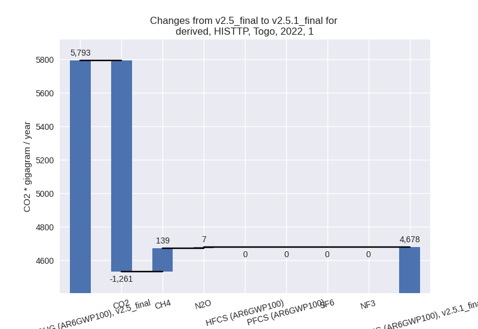
For 1990-2022 the changes per gas are:
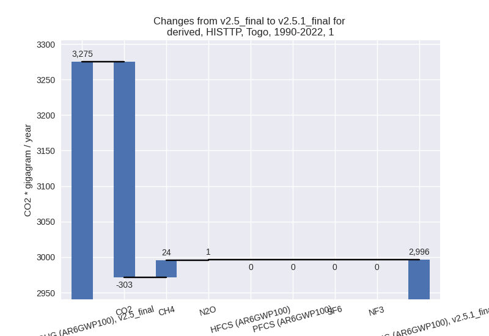
The changes come from the following subsectors:- 1.A: Total sectoral emissions in 2022 are 2370.23
Gg CO2 / year which is 50.7% of category 1 emissions. 2022 Emissions
have changed by -34.3% (-1238.49 Gg
CO2 / year). 1990-2022 Emissions have changed by -16.1% (-300.04 Gg CO2 / year). For 2022
the changes per gas
are:
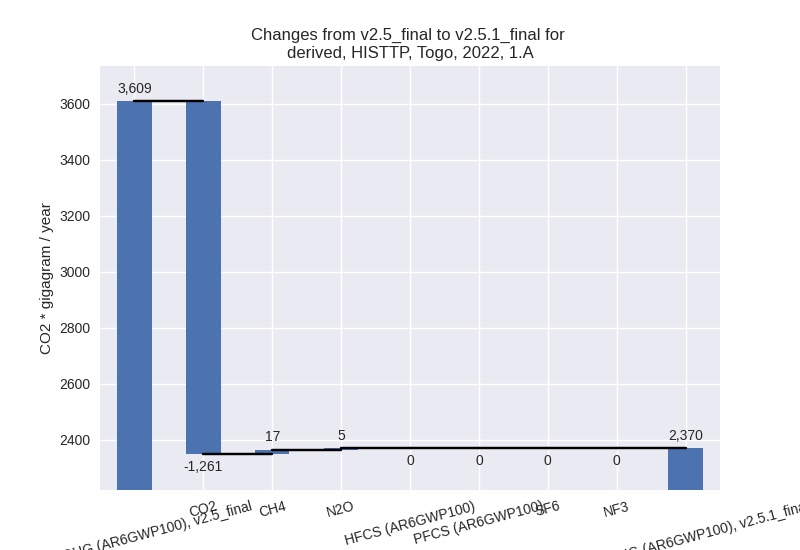
For 1990-2022 the changes per gas are:
There is no subsector information available in PRIMAP-hist. - 1.B.1: Total sectoral emissions in 2022 are 2303.61
Gg CO2 / year which is 49.2% of category 1 emissions. 2022 Emissions
have changed by 5.5% (119.12 Gg CO2
/ year). 1990-2022 Emissions have changed by 1.2% (17.33 Gg CO2 / year). For 2022 the
changes per gas
are:
There is no subsector information available in PRIMAP-hist. - 1.B.2: Total sectoral emissions in 2022 are 4.40 Gg
CO2 / year which is 0.1% of category 1 emissions. 2022 Emissions have
changed by inf% (4.40 Gg CO2 /
year). 1990-2022 Emissions have changed by inf% (4.03 Gg CO2 / year). For 2022 the
changes per gas
are:
For 1990-2022 the changes per gas are:
There is no subsector information available in PRIMAP-hist.
- 1.A: Total sectoral emissions in 2022 are 2370.23
Gg CO2 / year which is 50.7% of category 1 emissions. 2022 Emissions
have changed by -34.3% (-1238.49 Gg
CO2 / year). 1990-2022 Emissions have changed by -16.1% (-300.04 Gg CO2 / year). For 2022
the changes per gas
are:
- 2: Total sectoral emissions in 2022 are 1752.07 Gg CO2 / year which is 15.2% of M.0.EL emissions. 2022 Emissions have changed by -0.7% (-11.69 Gg CO2 / year). 1990-2022 Emissions have changed by -1.5% (-13.10 Gg CO2 / year).
- M.AG: Total sectoral emissions in 2022 are 3289.09
Gg CO2 / year which is 28.6% of M.0.EL emissions. 2022 Emissions have
changed by -7.7% (-274.61 Gg CO2 /
year). 1990-2022 Emissions have changed by -2.2% (-53.27 Gg CO2 / year). For 2022 the
changes per gas
are:
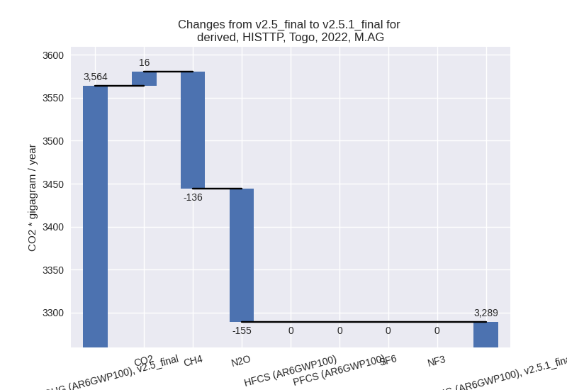
For 1990-2022 the changes per gas are:
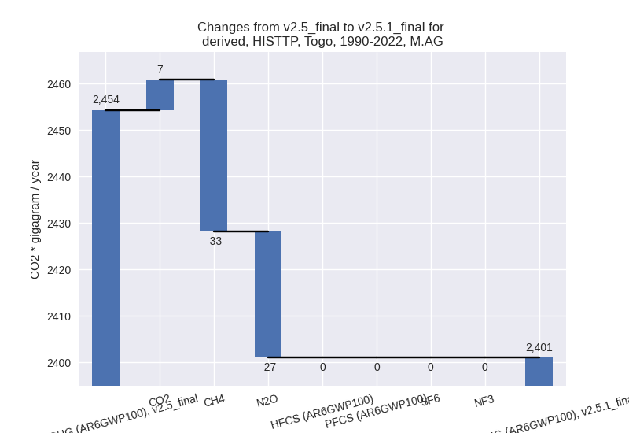
The changes come from the following subsectors:- 3.A: Total sectoral emissions in 2022 are 1605.84
Gg CO2 / year which is 48.8% of category M.AG emissions. 2022 Emissions
have changed by -5.0% (-84.30 Gg CO2
/ year). 1990-2022 Emissions have changed by -1.0% (-10.47 Gg CO2 / year). For 2022 the
changes per gas
are:
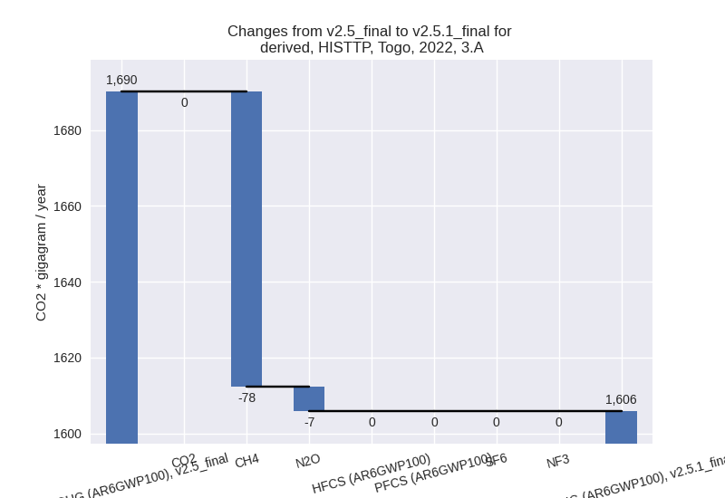
There is no subsector information available in PRIMAP-hist. - M.AG.ELV: Total sectoral emissions in 2022 are
1683.25 Gg CO2 / year which is 51.2% of category M.AG emissions. 2022
Emissions have changed by -10.2%
(-190.31 Gg CO2 / year). 1990-2022 Emissions have changed by -2.9% (-42.81 Gg CO2 / year). For 2022 the
changes per gas
are:
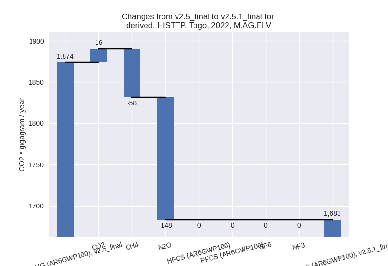
For 1990-2022 the changes per gas are:
There is no subsector information available in PRIMAP-hist.
- 3.A: Total sectoral emissions in 2022 are 1605.84
Gg CO2 / year which is 48.8% of category M.AG emissions. 2022 Emissions
have changed by -5.0% (-84.30 Gg CO2
/ year). 1990-2022 Emissions have changed by -1.0% (-10.47 Gg CO2 / year). For 2022 the
changes per gas
are:
- 4: Total sectoral emissions in 2022 are 1679.82 Gg CO2 / year which is 14.6% of M.0.EL emissions. 2022 Emissions have changed by 0.0% (0.33 Gg CO2 / year). 1990-2022 Emissions have changed by 0.0% (0.01 Gg CO2 / year).
- 5: Total sectoral emissions in 2022 are 119.51 Gg
CO2 / year which is 1.0% of M.0.EL emissions. 2022 Emissions have
changed by 7.5% (8.33 Gg CO2 /
year). 1990-2022 Emissions have changed by 0.4% (0.25 Gg CO2 / year). For 2022 the
changes per gas
are:
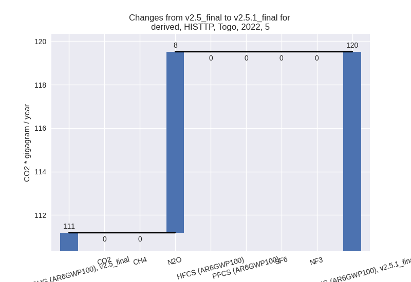